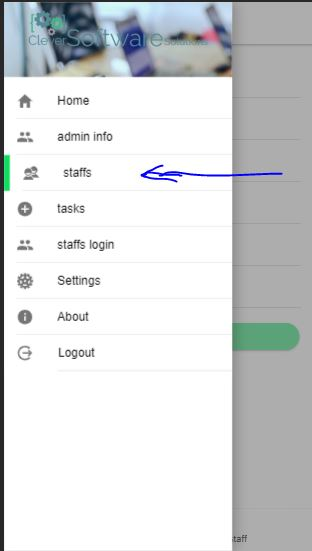
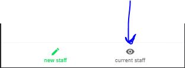
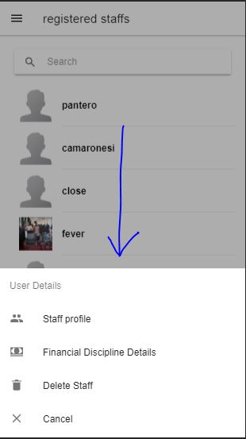
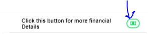
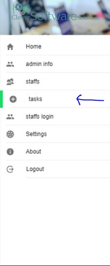
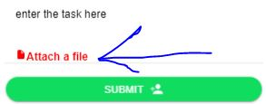
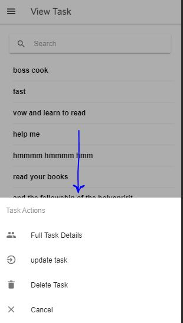
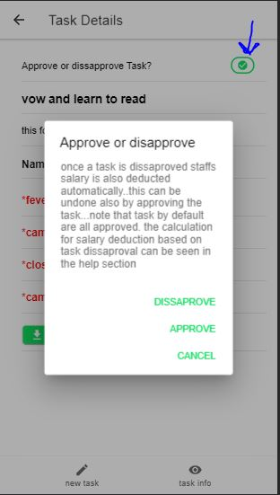

Staffs
Register A new Staff
To register a new staff simply navigate to the staffs section
on the navigation and you will be presented with a form to add a new staff

fill the form with correct details and you will add a staff successfully.
View All Staffs
to view all the registered staffs
use the tabs after clicking on the staffs to view registered staffs

to view other details like staff full profile details and current salary balance for the month as well as deleting a staff if he
no longer belongs to the company use the actionsheet which comes up once a staff is clicked

Staff Financial Discipline
the financial discipline on the actionsheet only shows the staffs financial disciplinary report for the month
which includes deduction of staff salary for that month and staffs current balance. To see previous reports of other months
since the staff became a member of you company you should click on the icon at the top see image:

that will lead you to a modal where you can perform your search if that staff has no financial disciplinary history
then no content will display if you try to perform a search for that staff.
Tasks
Add A new Task
To add a new task simply navigate to the tasks section
on the navigation and you will be presented with a form to add a new task

while adding a new task a section is provided to attach any kind of task which is optional
if you feel a need to attach a task then do attach one if you dont feel like attaching any then go ahead and click the submit
button

View Tasks
to view existing tasks just go to the task info tab once your in the task section that way you will view all Tasks
View Tasks Actions

there are three major actions once a task is clicked the first is to view the full task details this contains both the staffs
this task was assigned to as well as the ability to download the attached file if there is any.Here also tasks can be approved
or dissaproved by clicking this button in the image:

a task dissaproved means staffs execution of that task was not good or task was not executed at all and this also reduces staffs salary.
It simply reduces staffs salary by deducting the number of days in that month by the amout staff ought to earn for that month and then
substracts it to staffs current salary remaining for that month.This way staffs will take task execution more seriously knowing
the punishement that follows it. if that task is approved nothing happens only if staffs salary has been dissapproved